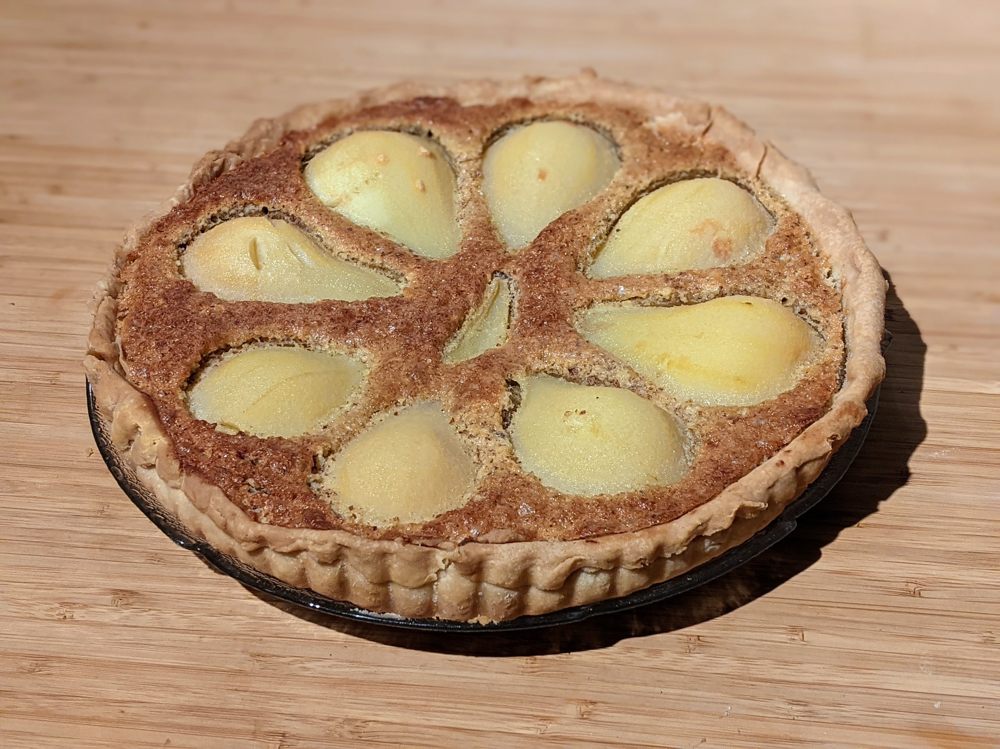

Tarte poire-frangipane

Pour une tarte (6-8 parts) :
- Une pâte brisée
- Trois grosses poires, ou quatre petites
- 100g de beurre
- 100g de poudre d'amandes
- 100g de sucre
- 20g de fécule de maïs
- Deux œufs
- Un trait d'amaretto
- Faire préchauffer le four à 190°C, disposer la pâte brisée sur un plat à tarte, et la faire cuire à blanc 5-10 minutes, jusqu'à ce qu'elle commence tout juste à prendre des couleurs.
- Pendant ce temps, éplucher les poires, les couper en moitiés, et enlever leur cœur.
- Faire bouillir un peu d'eau, ajouter 50g de sucre, et faire pocher les poires dedans jusqu'à ce que ça soit facile de planter un couteau dedans.
- Mélanger au batteur l'autre moitié du sucre et tous les autres ingrédients. Disposer le mélange dans la pâte à tarte, et disposer les moitiés de poire sur le dessus.
- Enfourner une demi-heure environ, jusqu'à ce que ça ait pris une jolie couleur. Déguster tiède.